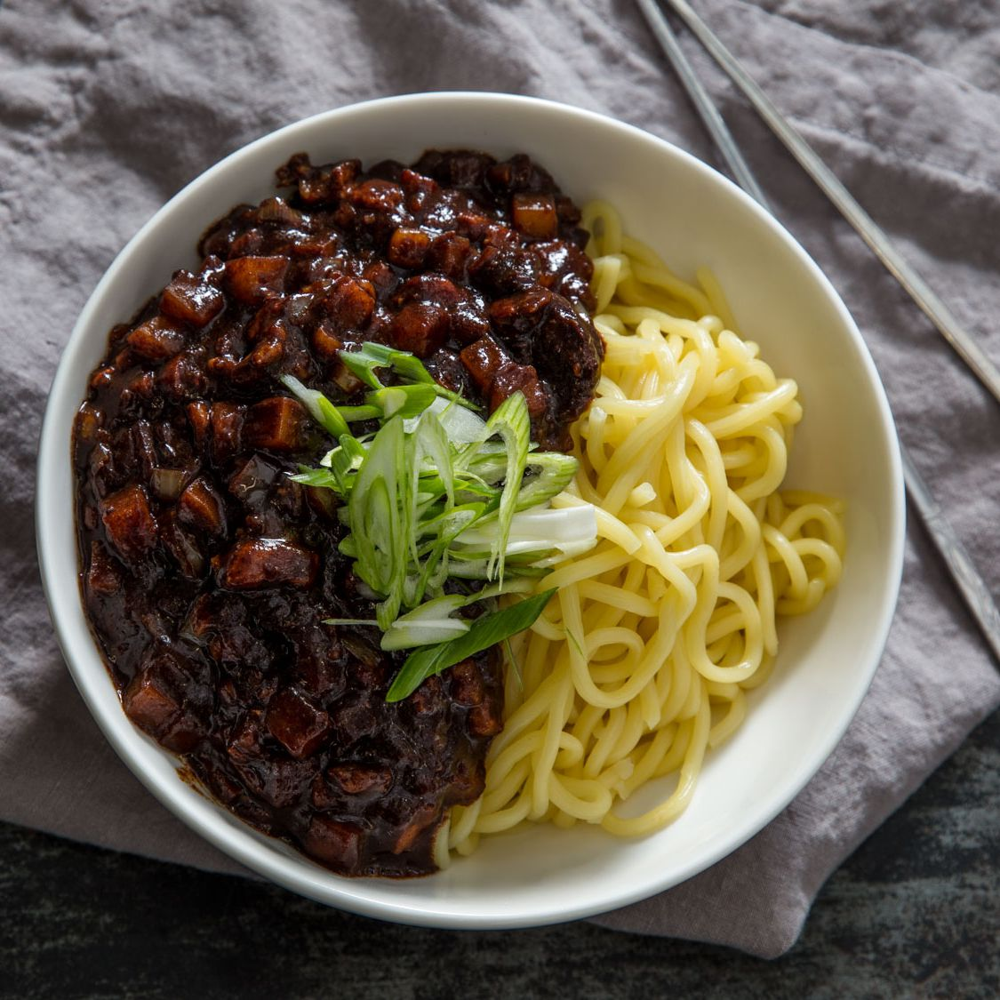

Jajangmyeon (Noodles with black bean sauce)

Ingredients
Pork Marinade
- 3/4 pound diced (boneless) pork shoulder
- 1 tablespoon mirin
- 1 teaspoon minced ginger
- 1/2 teaspoon salt
- 1/8 teaspoon black pepper
Toasted Jajang
- 2 tablespoons neutral oil
- 1/2 cup chunjang (Korean black bean paste)
- 1 teaspoon minced ginger
- 1 tablespoon sugar
Rest of dish
- 2 tablespoons neutral oil
- 1/4 pound peeled, deveined and chopped large shrimp (about 6)
- 1 diced yellow onion
- 2 diced zucchini
- 1 cup water
- 1 1/2 tablespoons cornstarch (combined with 3 tablespoons water)
- 24 ounces fresh udon/jajangmyeon noodles
Cooking process
Pork Marinade
- Combine pork shoulder, mirin, ginger, salt, and pepper and stir together. Set aside.
Toasted Jajang
- Place a large skillet over low heat and add oil.
- Once oil is hot, add black bean paste and sugar and stir together. Continuously stir for a few minutes to toast.
- Pour mixture into a small bowl and set aside.
Dish Assembly
- Place skillet back over medium heat. Add oil and sauté marinated pork for a few minutes.
- Add shrimp and continue to sauté.
- Transfer pork and shrimp mixture to a plate and set aside.
- Place skillet back over medium-high heat. Add remaining oil and sauté onion, 3 to 4 minutes.
- Add zucchini and continue to sauté for an additional 2 to 3 minutes.
- Pour pork and shrimp mixture back into the skillet and continue to sauté for 2 to 3 minutes.
- Stir toasted black bean paste into meat and vegetable mixture until evenly coated.
- Stir water into skillet mixture until sauce is smooth and simmering.
- Add cornstarch slurry and stir together until sauce thickens. Remove from heat and keep warm.
- Fill a large pot with water and place over high heat. When water begins to boil, add noodles and cook through, stirring occasionally, until noodles are cooked through, but still a little chewy, about 5 to 6 minutes. Drain noodles into a colander and give them a gentle and quick rinse.
- Divide noodles into bowls and top each with ladles of sauce.
- Mix noodle and sauce together.
- Enjoy!
Return